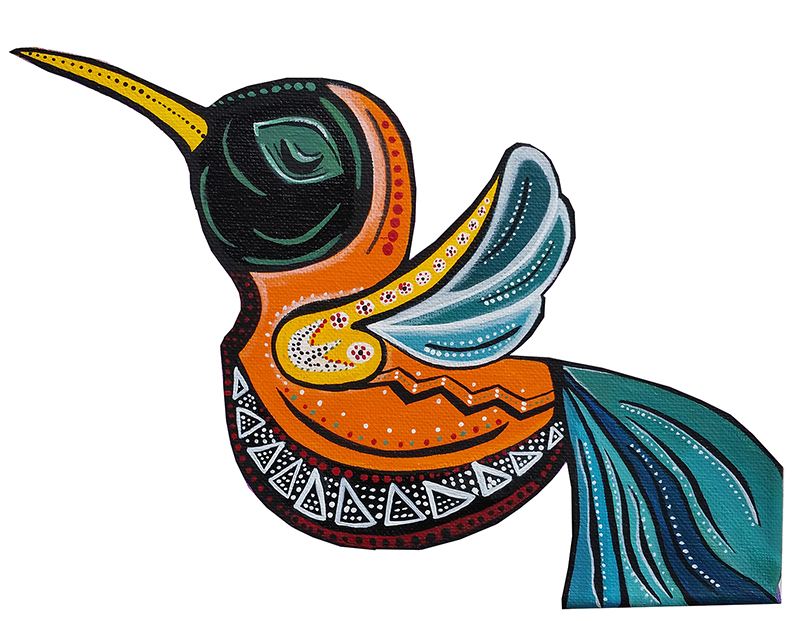

Media Lengua

Herramientacunaca
Herramientas
Tools
Chaupishimi dictionarioca
Dictionario de media lengua
Media Lengua Dictionary
Oracion Analizadorca Chaupishimipapash Quichuapapash
Analizador Morfológico/ Sintáctico de Media Lengua y Quichua
Media Lengua and Quichua Grammatical Parser
Verbocunaca escribingapa Chaupishimipipash Quichuapipash
Conjugador Verbal de Media Lengua y Quichua
Media Lengua and Quichua Verb Conjugator
Hipervinculocunaca
Hipervínculos
Links
Asimi ditsinchi (pronunciacionca)
Pronunciación
Pronunciation
Sobre nuestro chaupishimimanta
Acerca de media lengua
About Media Lengua
Sumak Pacha y Pijal
Sumak Pacha y Pijal
Community Tourism and Pijal